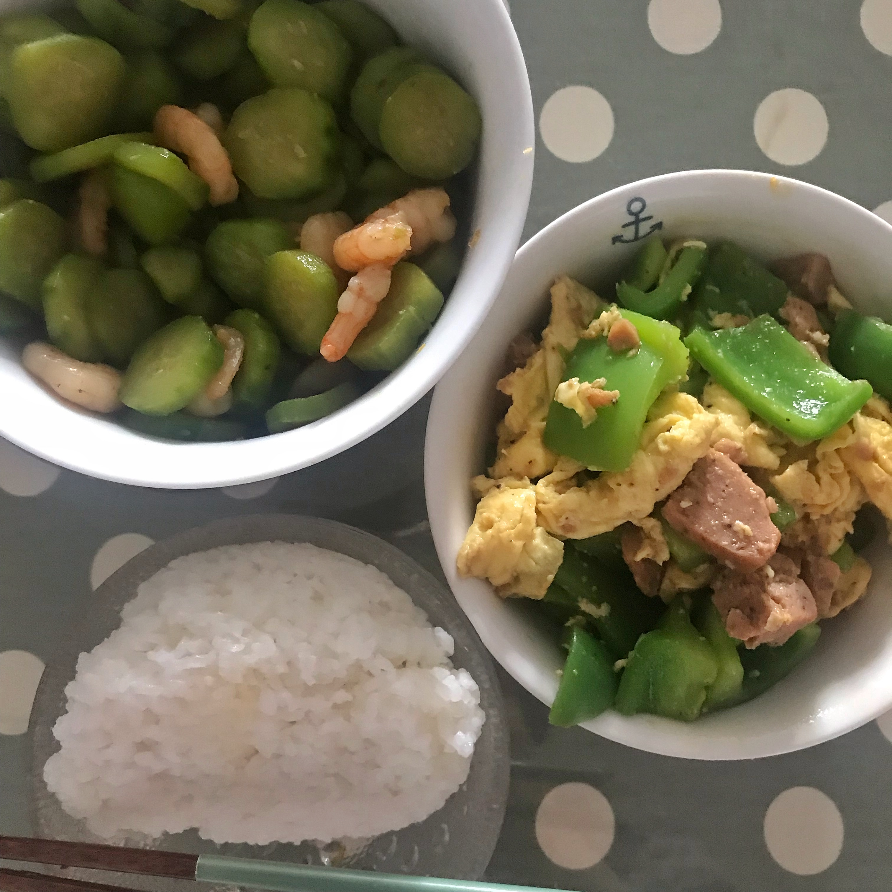
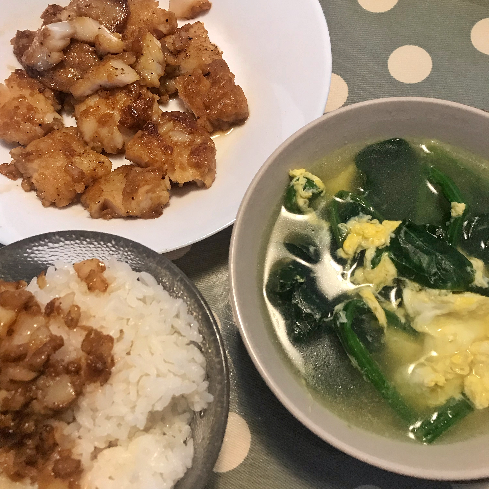
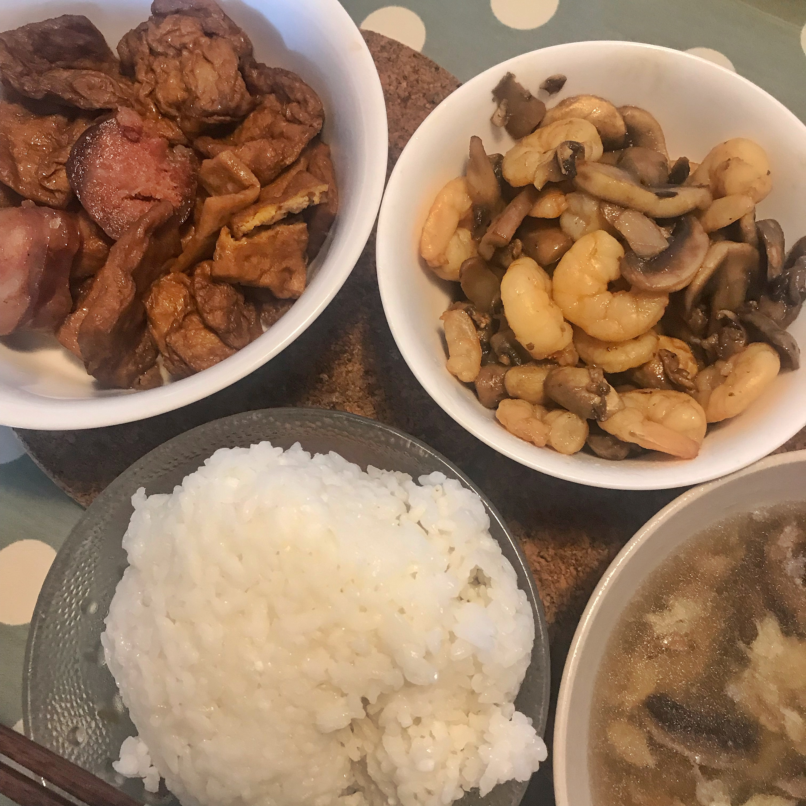
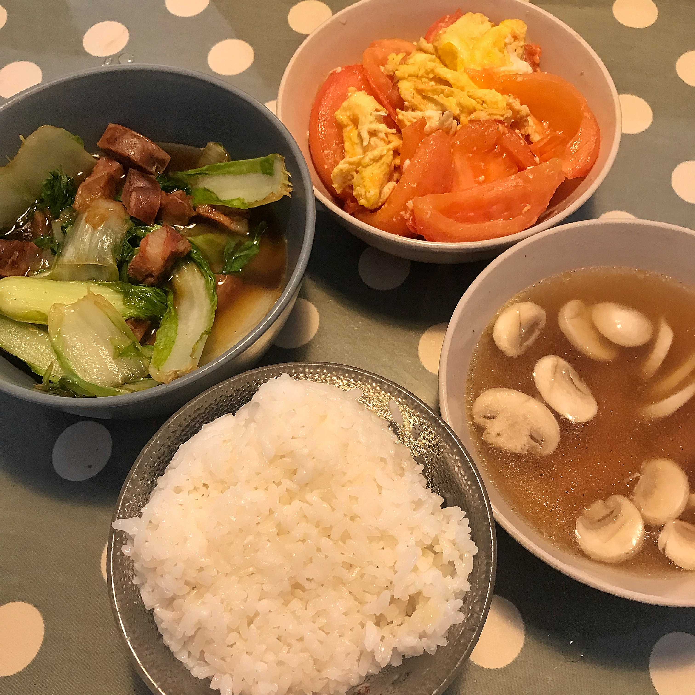
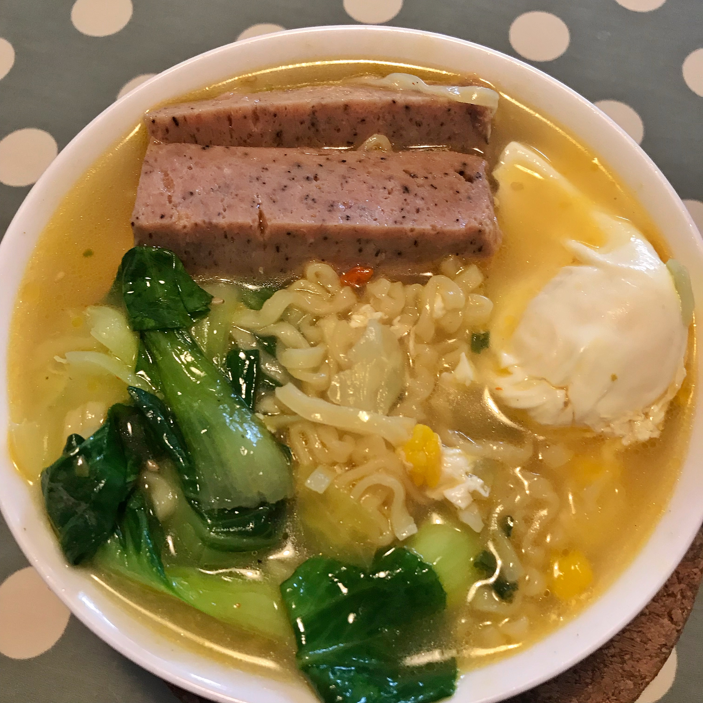
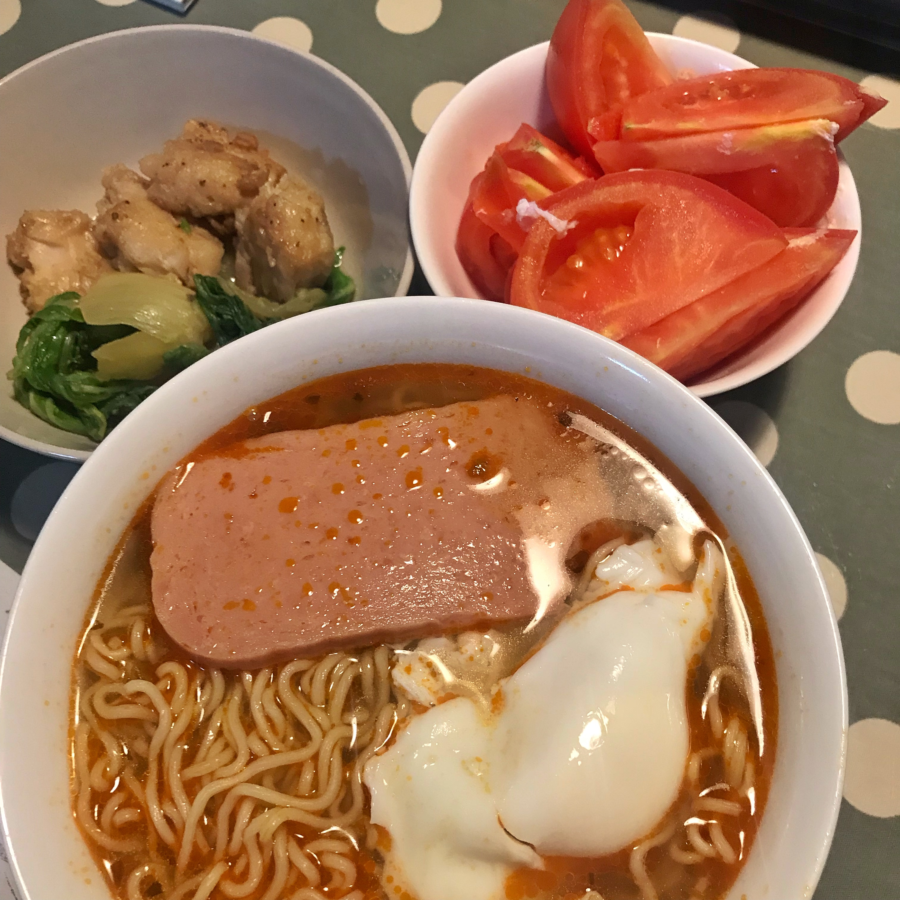

料理¶
朝ごはん¶
Day 1¶
Fried Egg
Fried Dumpling
Coffee
Day 2¶
Hand-grasping Cake + Pork Luncheon Meat + Scrambled Egg
Coffee
Day 3¶
Sumai
Steamed Bun
Coffee
ランチ / 晩ごはん¶
Meal 1¶

Rice
Cucumber + Shrimp
Green Pepper + Egg
Meal 2¶

Rice
Fish Fillet
Spinach Soup
Meal 3¶
Meal 4¶

Rice
Sausage + Dried Tofu
Mushroom + Shrimp
Soup
Meal 5¶

Rice
Tomato + Eggs
Cabbage + Sausage
Mushroom Soup
Meal 6¶

Noodles
Green Vegetables
Pork Luncheon Meat
Egg
Meal 7¶

Noodles
Tomato + Cabbage
Pork Luncheon Meat
Egg